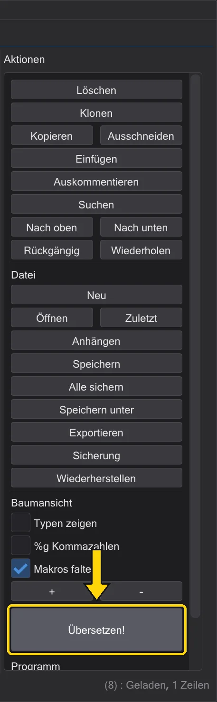
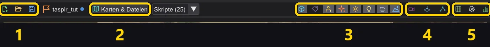
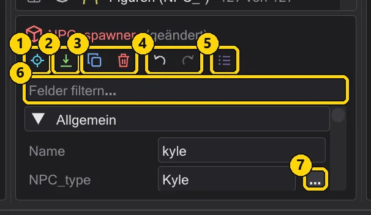
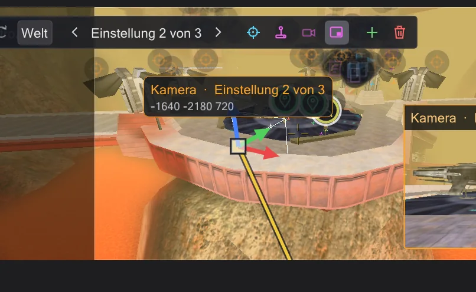
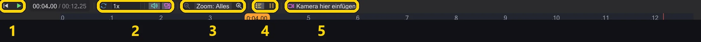
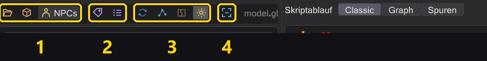

Jeder Knopf
Jeder Knopf des Programms - Modusleiste, Aktionsspalte, Kartenleiste, Platzier-Kacheln, Inspektor, Kamera, Zeitleiste und Modellansicht - mit dem, was er tut.
Fahr mit der Maus über einen Knopf im Programm, um dieselbe Erklärung als Tooltip zu sehen. Knöpfe mit farbigem Rahmen sind Schalter: an oder aus.
Die Modusleiste#
Der Streifen ganz links schaltet um, was das Fenster zeigt. Das Skript bleibt in jedem Modus dasselbe.
| Modus | Was er zeigt |
|---|---|
| Ereignisse | Die Liste Ereignisse mit jedem Befehl und Makro, der Skriptbaum, die Aktionsspalte - zum Schreiben von Skripten. Skripte schreiben |
| Mission | Die Mission: Entity-Liste und Inspektor, die Karte in 3D mit der Zeitleiste darunter - für Kameras, Figuren, Entities und das Speichern der Mission. Die Karte |
| Modell | Ein Figurenmodell mit seinen Animationen - um eine Animation zu finden und ins Skript zu setzen. Modellansicht und Figuren |
Die Aktionsspalte (Events-Modus)#

| Knopf | Was er tut |
|---|---|
| Löschen | Entfernt die gewählten Zeilen (Entf). |
| Klonen | Fügt direkt darunter eine Kopie ein (Leertaste). |
| Kopieren / Ausschneiden / Einfügen | Zwischenablage (Strg+C / X / V). Einfügen setzt unter die Auswahl; Text aus anderen Programmen wird nach einer Rückfrage angenommen. |
| Auskommentieren | Macht Zeilen zu Kommentaren und zurück (Rücktaste). |
| Suchen | Das Suchfenster (Strg+F): nach Befehl oder Wert suchen, in einem oder allen Skripten ersetzen. Suchen und Ersetzen in allen offenen Skripten |
| Nach oben / Nach unten | Verschiebt die Auswahl um eine Zeile, innerhalb ihres Blocks (Alt+↑/↓). |
| Rückgängig / Wiederherstellen | Rückgängig und Wiederholen. Ein Rechtsklick auf einen der beiden zeigt den ganzen Verlauf. Alles rückgängig machen - sogar einen Schritt aus der Mitte |
| Neu / Öffnen | Ein leeres Skript / eine .txt oder eine übersetzte .ibi öffnen. |
| Zuletzt | Zuletzt geöffnete Dateien (Alt+M). |
| Anhängen | Hängt ein anderes Skript an das Ende dieses Skripts an. |
| Speichern / Alle sichern / Speichern unter | Dieses Skript speichern, jeden geänderten Reiter oder unter neuem Namen. |
| Exportieren | Schreibt das Skript als reinen Text und öffnet ihn. |
| Sicherung / Wiederherstellen | Legt eine Kopie neben dem Skript ab (.bak) / kehrt zu ihr zurück (Alt+B / Alt+R). |
| Typen zeigen | Zeigt die Werttypen im Baum. |
| %g Kommazahlen | Zeigt Zahlen kurz: 1000 statt 1000.000. |
| Makros falten | Zeigt ein Makro als eine Zeile. |
| + / - | Klappt jeden Block auf oder zu. |
| Übersetzen! | Speichert das Skript und schreibt die .ibi, die das Spiel ausführt; grün, wenn es geklappt hat, rot mit den Meldungen, wenn nicht. Übersetzen und Fehler beheben |
Die Kartenleiste (Mission-Modus)#

| Nr. | Name | Was es macht |
|---|---|---|
| 1 | Mission | Neue Mission, Mission laden, Mission speichern - und der Name der offenen Mission. |
| 2 | Karten Dateien | Eine Karte, einen Missionsordner oder eine .ent-Datei öffnen; Skripte (N) daneben listet die Skripte der Karte. |
| 3 | Was die Ansicht zeigt | Entities, Namen, Figuren, Effekte, Leuchten, dynamisches Licht, Nebel, Himmel - jedes ein Schalter. |
| 4 | Blick | Durch die Kamera, Draufsicht, das Fenster der NPC-Wegpunkte. |
| 5 | Werkzeuge | Raster, Ansicht einstellen, Statistik. |
Jeder Knopf im Einzelnen:
| Knopf | Was er tut |
|---|---|
 Neue Mission Neue Mission | Startet eine Mission auf einer beliebigen Karte: Spielerstart, Skriptstarter, Intro-Skript und Missionsordner werden angelegt. 1 · Die Mission anlegen |
 Mission laden Mission laden | Öffnet eine Mission aus einer .pk3: Karte, Entities, jedes Skript in einem Reiter, die Figuren. Missionen |
 Mission speichern Mission speichern | Speichert jedes Skript, schreibt die .ent, übersetzt und packt die .pk3 - nachdem die Mission geprüft wurde. 8 · Speichern und spielen |
 Keine Mission Keine Mission | Der Name der offenen Mission; ein Punkt heißt: ungespeicherte Änderungen. Mit der Maus darüber siehst du ihren Ordner. |
 Karten Dateien Karten Dateien | Öffnet eine Karte von der Festplatte oder aus einer .pk3, einen Missionsordner oder eine eigene .ent-Datei. |
| Skripte | Die Skripte, auf die die Entities der Karte verweisen - eins wählen öffnet es. |
 Entities Entities | Zeigt die Entity-Markierungen: Laufziele, Marken, Skriptstarter, Spawner. |
 Namen Namen | Schreibt die Namen von Entities und Figuren in die Ansicht. |
 Figuren Figuren | Zeigt die Figuren des Skripts, bewegt von der Zeitleiste. |
 Effekte Effekte | Zeigt die Effekte der Karte (fx_runner). |
 Glühen Glühen | Das Leuchten von Shadern mit glow, wie r_DynamicGlow. |
 Dynamisches Licht Dynamisches Licht | Lichtschwerter und Effektlichter beleuchten Wände und Figuren. |
 Nebel Nebel | Der Nebel der Karte, so wie das Spiel ihn zeichnet. |
 Himmel Himmel | Der Himmel; ausgeschaltet kannst du von außen in die Karte schauen. |
 Durch die Kamera Durch die Kamera | Zeigt, was die Kamera sieht - den gewählten Kamerabefehl oder die Kamera am Zeiger. Beim Arbeiten durch die Kamera schauen |
 Draufsicht Draufsicht | Schaut senkrecht nach unten; eine Schnitthöhe blendet Decken aus. Die Karte von oben ansehen |
 NPC-Wegpunkte NPC-Wegpunkte | Das Fenster der NPC-Wegpunkte: das Netz zeigen, anlegen und prüfen. NPC-Wegpunkte |
 Raster Raster | Rastet Entities beim Ziehen und Setzen auf 8 bis 64 Einheiten ein. |
 Ansicht einstellen Ansicht einstellen | Helligkeit, Umgebungslicht, Detail, Schatten, Hervorheben der Entities des aktiven Skripts und das Spielbild: Seitenverhältnis, cg_fovAspectAdjust und der Rahmen in der freien Ansicht (Vorschau und Durchschauen). Besser sehen in dunklen Karten |
 Statistik Statistik | Bildrate, Texturen, Dreiecke und Werte der Grafikkarte. |
Die Platzier-Kacheln#
Der Streifen am linken Rand der Karte. Eine Kachel anklicken, dann auf den Boden klicken - oder die Kachel in die Ansicht ziehen. Umschalt setzt mehrere, Esc hört auf. Entities setzen, verschieben und drehen
| Knopf | Was er tut |
|---|---|
| Figur (NPC_spawner) | Eine Figur, die erscheint: NPC_type und einen Namen setzen. |
 Laufziel (waypoint_navgoal) Laufziel (waypoint_navgoal) | Ein Ort, zu dem eine Figur geht (SET_NAVGOAL). |
 Kamera-/Blickmarke (ref_tag) Kamera-/Blickmarke (ref_tag) | Eine Marke mit Richtung - für Kameras (tag) und Blickziele. |
 Blickziel (target_position) Blickziel (target_position) | Ein Punkt zum Hinschauen oder Zielen. |
 Skriptstarter (target_scriptrunner) Skriptstarter (target_scriptrunner) | Startet ein Skript, wenn er benutzt wird - von einem Trigger, dem Spielerstart oder einem anderen Skript. |
| Effekt (fx_runner) | Spielt eine Effektdatei ab (.efx). |
 Klang (target_speaker) Klang (target_speaker) | Spielt einen Klang ab, einmal oder in Schleife. |
| NPC-Wegpunkt (waypoint) | Ein Punkt des NPC-Navigationsnetzes. |
| Spielerstart (info_player_start) | Wo der Spieler erscheint. |
Der Entity-Inspektor#

| Knopf | Was er tut |
|---|---|
 Hinfliegen Hinfliegen | Fliegt die Ansicht zur Entity. |
 Auf den Boden Auf den Boden | Setzt sie auf den Boden darunter, wie DROPTOFLOOR im Spiel. |
 Duplizieren Duplizieren | Eine Kopie - von jeder gewählten Entity. Alt+Ziehen in der Ansicht tut dasselbe. |
 Löschen Löschen | Entfernt sie. |
 Animieren Animieren | Öffnet das Animationsfenster für Türen, Plattformen, Schiffe und Effekte. Mover animieren und ROFF-Dateien |
 Rückgängig Rückgängig | Macht die letzte Entity-Änderung rückgängig (Entities haben ihren eigenen Verlauf). |
 Wiederholen Wiederholen | Stellt sie wieder her. |
 Alle Schlüssel (roh) Alle Schlüssel (roh) | Zeigt jeden Schlüssel als reinen Text. |
| + Schlüssel | Fügt einen Schlüssel hinzu. |
| Öffnen | Neben einem Skript-Schlüssel: öffnet das Skript - und legt es im Missionsordner an, wenn es noch nicht existiert. |
Die Kameraleiste#
Erscheint in der Ansicht, wenn die Kamera gewählt ist. Kamera

| Knopf | Was er tut |
|---|---|
 Verschieben Verschieben | Pfeile: die Einstellung entlang einer Achse verschieben, das Kästchen in der Mitte in der Bildebene. |
 Drehen Drehen | Ringe: die Einstellung drehen. |
| Welt | Welt oder Lokal: die Pfeile folgen den Achsen der Karte oder der Kamera. |
 Vorige Einstellung Vorige Einstellung | Die vorige Einstellung. |
 Nächste Einstellung Nächste Einstellung | Die nächste Einstellung. |
| Auf Ansicht setzen | Setzt die Einstellung dorthin, wohin du schaust. |
 Steuern Steuern | In die Einstellung setzen und sie fliegen; Enter setzt einen Schlüssel. Eine Kameraeinstellung selbst fliegen |
| Durch die Kamera | Durch die Kamera schauen. |
 Kameravorschau Kameravorschau | Ein kleines Bild aus Sicht der Kamera in der Ecke. |
 Neue Kameraeinstellung hier Neue Kameraeinstellung hier | Eine neue Einstellung an deiner Ansicht, hinter der gewählten. |
| Einstellung löschen | Entfernt die Einstellung. |
Die Zeitleiste#

| Nr. | Name | Was es macht |
|---|---|---|
| 1 | Abspielen | Zurück zum Anfang, abspielen / anhalten - die Zeitanzeige daneben schaltet zwischen Sekunden und Bildern um. |
| 2 | Wiedergabe | Schleife, Ton, der Kamera folgen - und die Tempoliste. |
| 3 | Zoom | Zeigt mehr oder weniger Zeit. |
| 4 | Zeilen | Eine Zeile je Figur, ruhige Zeilen, waits als Blöcke. |
| 5 | Kamera hier einfügen | Fügt am Zeiger eine Kameraeinstellung ein. |
Jeder Knopf im Einzelnen:
| Knopf | Was er tut |
|---|---|
 An den Anfang An den Anfang | Zurück zum Anfang des Skripts. |
 Abspielen Abspielen | Spielt die Szene ab - Kamera, Figuren, Ton - in Spielzeit. |
 Schleife Schleife | Beginnt am Ende von vorn. |
| Klang | Spielt die Klänge ab, während die Zeitleiste läuft - gehört von der Kamera aus, die die Ansicht zeigt, wie im Spiel. Ton wie im Spiel |
 Mitfahren Mitfahren | Führt die Ansicht mit der Kamera mit. |
 Herauszoomen Herauszoomen | Zeigt mehr Zeit. |
 Hineinzoomen Hineinzoomen | Zeigt weniger Zeit, dafür genauer. |
 Figurenzeilen Figurenzeilen | Eine Zeile je Figur: wann jede geht, spricht und handelt. |
 Ruhige Spuren Ruhige Spuren | Zeigt auch Zeilen, in denen nichts geschieht. |
 waits waits | Zeigt die waits als eigene Blöcke. |
| Kamera hier einfügen | Fügt am Zeiger eine Kameraeinstellung ein. |
Ein Klick auf die Zeitanzeige schaltet zwischen Sekunden und Bildern um; die Liste neben dem Abspielknopf stellt das Tempo ein. Blöcke ziehen verschiebt sie in der Zeit - Zeitleiste.
Die Modellleiste (Modell-Modus)#

| Nr. | Name | Was es macht |
|---|---|---|
| 1 | Öffnen | Eine .glm von der Festplatte, ein Modell aus den Archiven oder eine Figur des Spiels (NPCs). |
| 2 | Skin und Skelett | Ein anderer .skin, eine andere .gla. |
| 3 | Blick | Drehteller, Knochen, Kappen, Texturen. |
| 4 | Ansicht einpassen | Das ganze Modell im Bild, von vorn. |
Jeder Knopf im Einzelnen:
| Knopf | Was er tut |
|---|---|
| .glm öffnen | Öffnet ein .glm-Modell von der Festplatte. |
 Aus .pk3 Aus .pk3 | Öffnet ein Modell aus den Archiven des Spiels. |
| NPCs | Jede Figur des Spiels - eine anklicken lädt sie so, wie das Spiel sie zeigt. |
| .skin öffnen | Lädt einen .skin für das Modell. |
| .gla laden | Lädt eine andere Skelett-/Animationsdatei (.gla). |
| Drehteller | Dreht das Modell langsam um sich selbst. |
| Knochen | Zeigt das Skelett. |
 Kappen zeigen Kappen zeigen | Zeigt die Kappen der Flächen, an denen Gliedmaßen ansetzen. |
| Texturen | Texturen an oder aus. |
 Ansicht einpassen Ansicht einpassen | Das ganze Modell im Bild, von vorn. |
| Kopieren | In der Animationsliste: kopiert den Namen der Animation. |
| Ins Skript | Setzt set ( SET_ANIM_BOTH, ... ) für die Animation ins Skript. Eine Figur eine Animation spielen lassen |